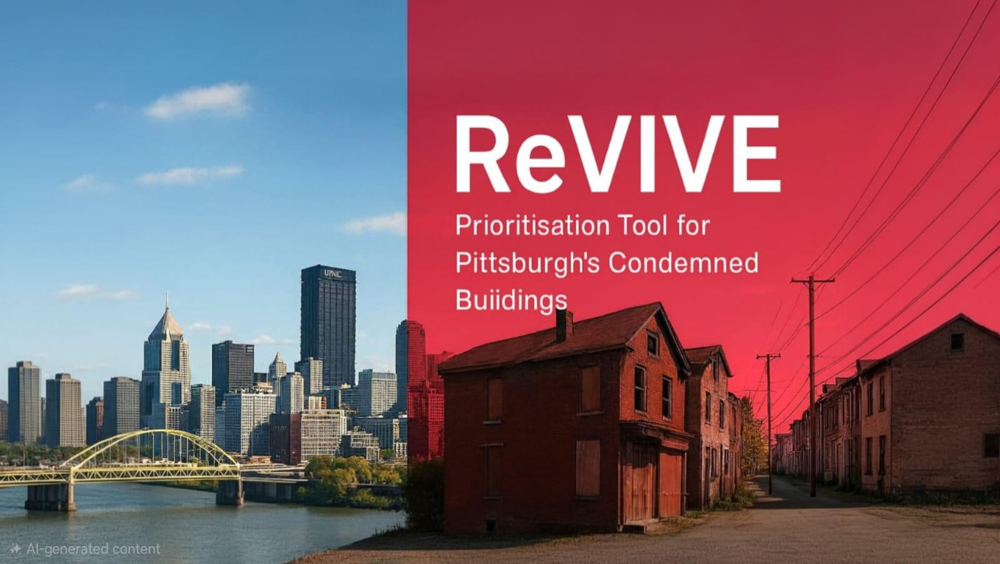

Figure row 1 (two columns)


Figure row 2 (two columns)


Figure row 3 (optional full-width)

Note: Your repo already has suitable screenshots underData/:pittsburgh_community.jpg,Property Management.png,Data driven .png,Interactive mapping.png. Copy or export them into your portfolio’sassets/images/and update the paths above.
Technical approach diagram (centered)
technical_approach_renewpgh.png not yet in the portfolio folder.)
Project motivation & problem statement
Vacant and condemned properties strain neighborhoods, public safety, and city capacity - but not every case is equally urgent or equally feasible to resolve. Agencies need a transparent, repeatable way to compare properties using physical risk, administrative and legal friction, and neighborhood context, then communicate priorities to staff, partners, and the public.
RenewPGH (Department of Permits, Licenses, and Inspections - PLI) focuses on turning problem properties into opportunities through systematic prioritization. ReVIVE (Renewal Visualization & Inspection Evaluation) is the decision-support application: it brings together property records, multi-stage scores, and interactive maps so agencies, developers, and community organizations can align on where and how to intervene.
This project addresses the gap between raw city and parcel data and actionable prioritization - without replacing professional judgment, but making it easier to apply consistently.
Technical approach
1. Data integration and parent dataset
- Merged condemned-property and parcel records with geocoding and centroids for mapping.
- Enriched context from neighborhood boundaries, zoning, crime incidents, 311 volumes, parks, transit (PRT) density, Census / CDBG block-group context (e.g., vacancy rate), and related CSV outputs from reproducible processing scripts.
- Central parent dataset (
Parent_dataset.csvand derivatives) is the backbone for tabs, scores, and maps.
2. Application stack - Streamlit modular tabs
- Built a wide-layout Streamlit app with separate modules per workflow: Home, Property Management, Physical Conditions (Stage 1), Administrative Status (Stage 2), Social Feasibility (Stage 3), and Suggestive Order of Action.
- Property management: load/edit the dataset, add properties, optional geocoding, PyDeck map of the portfolio.
- Caching (
st.cache_data) for responsive loads on large CSVs.
3. Multi-stage scoring (config-driven)
Scores are driven by JSON configs (e.g. physical_scoring.json, administrative_status.json, social_feasibility.json) so criteria and rubrics stay
editable without rewriting core UI code.
Stage 1 - Physical conditions (illustrative criteria):
- Violation danger level, estimated resolution time, vacancy duration, structural integrity, environmental hazards, fire/water damage severity - anchored to PLI / inspection logic and documented scales (0–5).
Stage 2 - Administrative status (illustrative criteria):
- Tax delinquency / liens, zoning compliance, ownership clarity, historic / preservation constraints, pathway to disposition - categorical rubrics with explicit anchor text for analysts.
Stage 3 - Social feasibility (illustrative criteria):
- Vacancy rate (tract/block group), crime incidence (neighborhood), park acreage density, transit density near PRT, 311 complaint volume - spatial joins and pre-aggregated metrics autofill where available.
4. Suggestive order of action and weighting
- Combines stage scores with user-adjustable weights into a weighted cumulative / final score.
- Priority labels (e.g., high / moderate / low) summarize recommended coordination intensity.
-
PyDeck visualization of top-priority parcels; optional CSV-driven target list (
Suggestivemaptemp.csv) to fix a curated set of parcels for demos or policy review.
Demonstration (add your deployed app, screen recording, or slide deck links):
- Streamlit Cloud / deployed app add URL
- Short walkthrough video - add URL
- Slides or one-pager for stakeholders - add URL
Multi-stage scoring & prioritization analysis
A. From raw attributes to comparable scores
- Normalized heterogeneous inputs (ordinal scales, booleans, percentages, neighborhood aggregates) into comparable stage scores using config-defined breakpoints and anchor language for consistency.
B. Administrative and zoning logic
- Integrated zoning utilities and categorical administrative rules so legal and procedural risk is explicit in the model - not only building condition.
C. Neighborhood context and equity of information
- Linked parcels to neighborhood-level service and stress indicators (crime, 311, parks, transit) and Census-style vacancy context so prioritization conversations can reference place-based factors, not only the parcel file.
Results
renewpgh_results.png not in repo; using representative scoring screenshot)- Single workspace for PLI-aligned workflows: inventory, score, and map without switching tools.
- Reproducible rubrics via JSON configs reduce ad hoc spreadsheet drift.
- Three-lens scoring (physical / administrative / social) surfaces cases that are urgent, legally complex, or context-sensitive in different ways.
- Suggestive order and map layers make tradeoffs visible for inter-agency and public-facing discussions.
Limitations
- Scores depend on data freshness and completeness; missing fields fall back to “unknown” or neutral handling and should be flagged in operational use.
- Automated spatial metrics simplify real-world dynamics (crime, 311, transit) and are not causal models of neighborhood outcomes.
- Professional inspection and legal review remain essential; the tool supports prioritization, not code compliance determinations or legal advice.
- Demo deployments may use subset or sanitized data - production governance (PII, retention, access control) must follow city policy.
Skills and technologies demonstrated
- Python data pipelines and merges (pandas; multiple preprocessing scripts)
- Streamlit multi-tab applications and forms
- PyDeck interactive mapping
- JSON-configured scoring models and UI generation from shared configs
- Geospatial / neighborhood joins (GeoJSON, centroids, aggregates)
- Product thinking for government stakeholders: clarity, auditability, and repeatable criteria